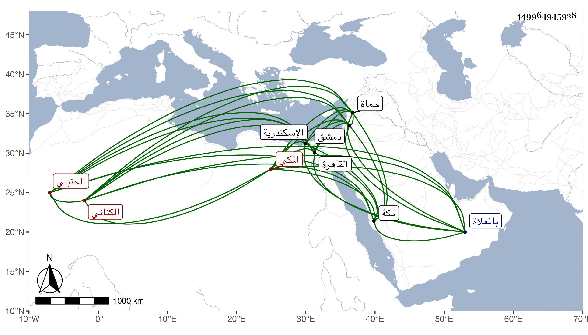

0902Sakhawi.DawLamic.ITO20230111-ara1.EIS1600.449964945928
Biography ID: 449964945928
566
أحمد بن محمد بن ناصر بن علي الشهاب الكناني المكي الحنبلي . ولد قبل الخمس بمكة وسمع بها العز بن جماعة والفخر النويري والكمال بن حبيب والجمال بن عبد المعطي والنشاوري وغيرهم وارتحل فسمع بدمشق ابن أميلة وابن قوالح وبحماة بعض أصحاب ابن مزيز وبحلب من جماعة سنة سبعين وبالقاهرة عبد الوهاب القروي وغيره وبالاسكندرية البهاء الدماميني ومحمد بن محمد ابن عبد الوهاب بن يفتح الله وصار له بعض أخساس ، بل قال شيخنا في أنبائه أنه كان خيرا فاضلا وكذا قال ابن خطيب الناصرية وكانت لديه فضيلة وفيه خير واحتمال وحدث باليسير انتهى . قال الفاسي : مات في رمضان سنة اثنتي عشرة بعد أن أقعد ودفن بالمعلاة عن ستين أو أزيد ، روى عنه ابن فهد وأرخه في سنة اثنتي عشرة كما قدمنا وهما أمس به وأما شيخنا ففي التي قبلها وكذا ابن خطيب الناصرية لكن ظنا .
